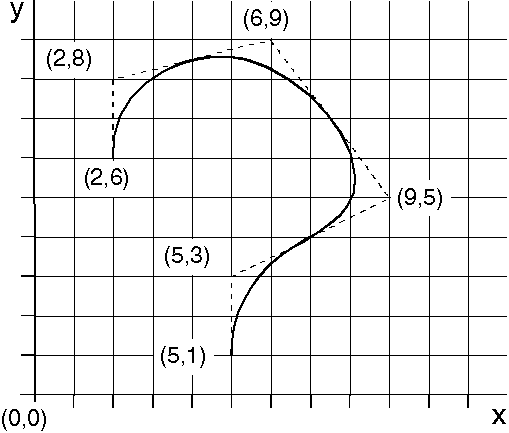
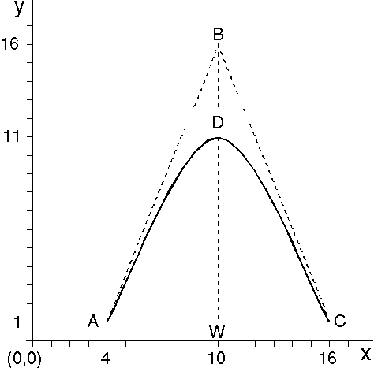

GpiPolyFillet constructs a fillet (a curved line) made up of one or more arcs, each of which touches a different straight line. You specify the end points of these straight lines with GpiPolyFillet. The lines are not drawn but are used to construct the curve.
The fillet starts at the current position and finishes at the end point of the last line. On the way from the start point to the end point, the fillet is tangential to all intermediate lines at their midpoints. When the fillet is drawn, the current position is at the end point of the last construction line. The following figure is an example of how a fillet is constructed.

The Fillet
The fillet starts at (2,6) and ends at (5,1). The fillet is tangential to the midpoints of the lines from (2,8) to (6,9), from (6,9) to (9,5), and from (9,5) to (5,3).
When you supply only two points, the construction lines of the fillet are drawn from the current position to the first point, and from the first point to the second point. The fillet is drawn from the current position to the second point, and is tangential to the construction lines at those same points.
GpiPolyFilletSharp creates a fillet on a series of connected construction lines. The first fillet in the series is built using two construction lines: one drawn from the current position to point 1 (the control point), and one drawn from point 1 to point 2 (the end point). The fillet is drawn from the current position to the end point, and is tangential to the two construction lines at those points.
GpiPolyFilletSharp also accepts as input a sharpness value. Sharpness is a measure of the distance between the fillet and the control point. It is calculated as shown in the following figure.

Fillet with Sharpness Specified
Point A is the current position, point B is the control point, and point C is the end point. W is the midpoint of the notional line AC. D is the point at which the fillet crosses the notional line WB.
The sharpness of the fillet is the value WD / DB. The line WD is 10 coordinate units, and the line DB is 5 coordinate units; therefore the sharpness value is 2. The sharpness value defines the type of arc. This is shown in the following table.
┌──────────────────────────────┬──────────────────────────────┐ │A sharpness value of... │Defines... │ ├──────────────────────────────┼──────────────────────────────┤ │Greater than 1.0 │A hyperbola │ ├──────────────────────────────┼──────────────────────────────┤ │Equal to 1.0 │A parabola │ ├──────────────────────────────┼──────────────────────────────┤ │Less than 1.0 │An ellipse │ └──────────────────────────────┴──────────────────────────────┘
Subsequent fillets start from the end point of the previous fillet, and are constructed using the next two lines in the sequence in exactly the same way. For each fillet you define one control point, one end point, and one sharpness value. Upon completion, the current position is at the end point of the final construction line in the sequence.
There might be discontinuity of gradient between multiple fillets drawn with GpiPolyFilletSharp. To avoid this, ensure that points B and C of one fillet are on the same construction line as points A and B of the next fillet in the sequence. This concept is illustrated in connection with the spline primitive in the figure that follows the next figure. Discontinuity of gradient between fillets does not occur when the fillets are drawn with GpiPolyFillet.